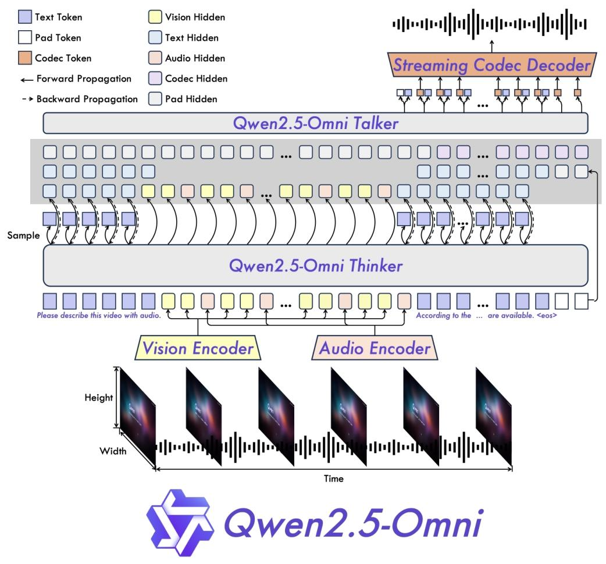

多模态大模型梳理
多模态大模型进展梳理
多模态大模型相比纯文本大模型，在输入输出上多了对多模态数据的支持。最主流的就是增加了对图像、视频输入的视觉语言模型，视觉语言模型的基础上增加对语音的输入输出支持，则是Omni（全能）模型。但主流的开源Omni模型并非真正的全能，它缺少了对图像视频等视觉数据的输出功能。此外还有相对小众一些的TTS（文本转语音，能力是Omni模型的子集），ASR（自动语音识别）等多模态大模型。本文梳理了主流的开源多模态大模型的技术报告和技术博客中的信息，从主流的Qwen VL系列，到当前的诸多原生多模态大模型，重点关注模型结构和训练流程，并穿插一些自己的启发。
Qwen-VL（2023，基于 Qwen-7B）
参考：https://arxiv\.org/abs/2308\.12966
第一代，思路很”经典组合式”，几乎是 BLIP-2 路线的加强版。
结构
视觉编码器：Openclip 的 ViT-bigG（约 1.9B），输入固定分辨率（第一阶段 224，后期 448）。
连接器：一个单层 cross-attention 的 position-aware VL Adapter——用 256 个可学习 query 把变长图像特征压成固定 256 个 token（和 BLIP-2 Q-Former 同宗），并且给 query 加了 2D 绝对位置编码以保留空间信息。
主干：Qwen-7B。
用
<img>...</img>特殊 token 包裹视觉 token，用<box>支持 grounding/检测框输出。
训练流程（三阶段，靠冻结/解冻控制）
预训练：冻结 LLM，只训 ViT + Adapter，大规模弱标注图文对，224 分辨率。
多任务预训练：全解冻，分辨率提到 448，加 VQA、grounding、OCR、caption 等多任务、交错图文数据。
SFT：冻结 ViT，训 LLM + Adapter，做指令对齐。
这一代的特征/局限：固定分辨率（丢细节）、Q-Former 式压缩有信息瓶颈、纯图像不支持视频。技术报告还给出了图文训练不会废掉文字能力：多模态训练后，纯文字问答、理解任务效果不降反升的结论，这一点在kimi k2.5中也有提到。
Qwen2-VL（2024，基于 Qwen2）—— 三个奠基性改动
参考：https://arxiv\.org/abs/2409\.12191
这一代确立了后面所有版本的骨架，是变化最大的一次。
结构
视觉编码器：放弃 ViT-bigG，改用从头训练的 ViT（约 675M），并引入 Naive Dynamic Resolution（原生动态分辨率）——不再 resize 到固定尺寸，图像按原始分辨率切 patch，patch 数随图大小变化。原图比例完整保留。大图自动多用一点算力存细节，小图自动压缩少占显存；ViT 内部把绝对位置嵌入换成 2D-RoPE。
连接器：从 Q-Former 换成简单的 MLP，并做 2×2 相邻特征压缩（把 4 个 patch 合成 1 个 token 再投影），用
<|vision_start|>/<|vision_end|>包裹。这是”连接器变轻”的关键一步——放弃 query 压缩，回归 MLP。主干位置编码：提出 M-RoPE（Multimodal RoPE），把位置 ID 拆成 （时间 t， 高 h， 宽 w） 三元组，文本让三者相等退化回 1D RoPE（不伤文本能力），图像共享 t、用二维坐标填 h/w，视频 t 随帧递增。这是多模态位置编码的里程碑。
图片、视频一套统一处理流程，视频每秒抽 2 帧，用 3D 卷积同时抓画面 + 时间信息；单张图直接当成两帧相同画面，不用分开两套训练逻辑，图文视频训练数据混在一起训练，兼顾看图和看片能力。
参数量：Qwen2-VL-2B，Qwen2-VL-7B，Qwen2-VL-72B
能力扩展：首次原生支持视频（动态帧率采样）、多语言 OCR、更强 grounding。
训练流程：延续Qwen VL，”ViT 预训练对齐 → 全参数联合预训练 → 指令微调”的多阶段，但因为动态分辨率，全程不再固定尺寸。
Qwen2-VL = 换 MLP 连接器 + 原生动态分辨率 + M-RoPE + 支持视频，四代里最本质的一跳。
Qwen2.5-VL（2025 初）—— 在 Qwen2-VL 骨架上做”时间”和”效率”的精修
参考：https://arxiv\.org/abs/2502\.13923
结构大框架没变（动态分辨率 + MLP + M-RoPE），改的是细节和训练规模。
结构改动
ViT 内部引入 Window Attention：大部分层用窗口注意力、少数层用全局注意力，让计算量随分辨率近似线性增长而非平方，大幅提升高分辨率/长视频效率。ViT 结构也向 LLM 对齐（用 SwiGLU、RMSNorm）。
绝对时间对齐的 M-RoPE（常称 T-RoPE / MRoPE-abs-time）：把 M-RoPE 的时间分量和真实秒数挂钩，而不再是”第几帧”的序号。好处是能吃不同 FPS 的视频、并支持秒级时间定位（temporal grounding）——回答”事件发生在第几秒”。
动态 FPS 采样：训练时在时间维也做动态采样，增强对不同帧率的鲁棒性。
训练：三阶段预训练。阶段 1：视觉预训练，只更新视觉编码器 ViT；LLM、跨融合模块全部冻结不动。阶段 2：多模态联合预训练（全参数解冻），ViT、跨模态融合层、Qwen2.5 LLM 全部参数放开，端到端联合训练。阶段 3：长上下文预训练（全参数更新）
后训练：全程冻结视觉 ViT，只更新融合层与 LLM，分为 SFT 监督微调、DPO 偏好优化两大步骤。
SFT数据过滤流水线
第一层：领域分层分类 专用分类模型把所有问答划分 8 大领域、30 个子类别（代码 / 文档 / 定位等），分领域单独清洗。
第二层：领域定制双重过滤
规则过滤：剔除残缺回答、重复内容、图文不匹配、有害提问；
模型打分过滤：自研奖励模型评估问题难度、答案正确性、图文结合度，低分样本直接删除。
针对数学、代码、复杂图表推理任务，拒绝采样强化推理
先用中间版模型批量生成答案；
仅保留和标准答案完全匹配、思维链完整样本；
过滤混语种、超长重复输出；
只保留视觉信息充分融入推理步骤的数据，强化 CoT 多步思考能力。
参数量：3B，7B，72B
Qwen2.5-VL = Window Attention 提效 + 时间对齐到绝对秒 + 文档/长视频/GUI agent 能力强化。
Qwen2.5-Omni
参考：https://arxiv\.org/abs/2503\.20215

Thinker：负责接收图片、声音、文字、视频，理解内容、逻辑推理、写出文字答案；
Talker：直接拿Thinker的思考结果，单独生成流畅语音，两条输出通道互不干扰，能同步出文字 + 声音。
Talker 用双轨生成语音，再搭配滑动窗口 DiT 模型，专门解决 “刚发指令要等很久才出声” 的卡顿问题，大幅缩短语音首包延迟。
TMRoPE 时间对齐位置编码（解决视频音画不同步）
视频既有画面又有声音，之前 AI 分不清哪段画面配哪段音频，理解容易错位。 TMRoPE 给每一段画面、每一段声音打上时间坐标：
画面有宽、高、时间三个维度标记；
音频每 40 毫秒一个时间编号；
视频按 2 秒一段拆开，画面信息放前面、音频放后面穿插排列，强制音画时间对齐。 AI 能精准对应 “几秒画面配几秒声音”，看懂视频里视听结合的信息（比如人说话的表情 + 台词）。
分块流式处理，降低实时延迟：不管图片、音频、视频编码器，全部改成分块处理，不用一次性加载完整内容：音频按 2 秒一块计算注意力；图片压缩相邻小块减少计算量；语音转波形用滑动窗口，只看前后少量片段，不用读取全部历史，实时对话、直播视频交互更流畅。
一、预训练阶段
Thinker 主干 LLM：加载现成 Qwen2.5 权重，初始完全冻结；
视觉编码器：复用 Qwen2.5-VL ViT，带视觉 adapter；
音频编码器：初始化 Whisper-large-v3，带音频 adapter；
Talker 语音分支：预训练阶段全程不参与训练，完全冻结，只在后训练阶段开启优化。
阶段 1：模态适配器预热（锁 LLM，只训视听编码器 + 适配器）
冻结模块
Thinker 内部 Qwen2.5 语言主干（所有 Transformer 层、词表嵌入全锁死，不更新）；
Talker 语音生成分支整体冻结。
可训练模块 ① 视觉编码器配套视觉适配器（adapter）； ② 音频编码器配套音频适配器（adapter）； ③ 视听编码器主体网络（ViT/Whisper 音频 Encoder）。
训练数据：图文、音文配对数据，目标让图像 / 音频特征通过 adapter 对齐 LLM 语义空间，不改动语言底层能力。
序列限制：最大 8192 tokens。
阶段 2：全参数放开融合训练（无模块冻结，全部可训）
无冻结：Thinker 整套（LLM 主干 + 视觉编码器 + 音频编码器 + 两类 adapter）全部解冻，参数同步更新；Talker 仍保持冻结。
新增海量混合数据：
图文 / 视频图文：800B token；
纯音频：300B token；
带音视频：100B token；
核心目标：打通文本、图像、音频、视频跨模态融合，TMRoPE 时序位置编码在此阶段联合优化；
序列限制：依旧 8192 tokens。
阶段 3：长序列扩展训练（全参数可训，加长上下文）
冻结情况：同阶段 2，Thinker 全参数可训练，Talker 依旧冻结；
改动：训练序列从 8192 拉长至32768 tokens；
数据：长音频、长视频、超长文档混合语料；
作用：提升长视频、长录音、超长多轮对话理解能力。
二、后训练阶段（先Thinker 微调、再Talker 三阶段语音微调）
Thinker 指令微调（文本 / 多模态对话）
冻结规则：Thinker 全部模块（LLM、视听编码器、适配器）解冻可训练；Talker 分支保持冻结。
训练数据：ChatML 格式对话，包含纯文本、看图对话、语音对话、音视频混合对话；
目标：对齐人类指令，保证语音提问、图片提问、视频提问的文字回答效果接近纯文本提问。
Talker 语音生成三阶段微调（独立训练语音分支）
Talker 是双轨自回归解码器，依赖 Thinker 输出的隐藏特征，分 3 轮递进训练，每轮冻结 / 训练对象不同：
Talker 阶段 1：上下文接续预训练
冻结：Thinker 整套完全锁死（只取固定隐藏特征输入 Talker）；
训练：Talker 完整网络（语音编解码器、Qwen-tts-tokenizer、滑动窗口 DiT、BigVGAN 声码器）；
目标：建立 “文本语义→语音 token” 基础映射，学会根据上下文生成连贯语音。
Talker 阶段 2：DPO 偏好强化学习（修复发音、停顿错误）
冻结：Thinker 依旧全程冻结；
训练：Talker 全网络，采用 DPO 损失，数据集构造（输入 x、优质语音 y_w、劣质语音 y_l）；
优化方向：降低错字率 WER、消除不合理停顿、解决音画 / 文本语音错位。
Talker 阶段 3：多音色 / 情绪微调
冻结：Thinker 冻结；DiT、BigVGAN 声码器主干可选择局部冻结，只微调音色适配层；
训练：Talker 语音 token 生成头、音色解耦模块；
效果：支持多种人声、口音、情绪语调，NMOS 自然度接近真人录音。
Qwen3-VL（2025 底）
参考：https://arxiv\.org/abs/2511\.21631
Qwen-VL系列的最后一舞
在 Qwen2.5-VL 基础上，针对”长视频、细粒度、时间”三个痛点各出一招，并首次有 MoE 版本。
结构改动（三个 headline）
Interleaved-MRoPE（交错式 M-RoPE）：发现 Qwen2-VL 的 M-RoPE 把 t/h/w 分成连续的频率块，导致时间 t 落在低频段、宽 w 落在高频段，频谱分配不均、伤长视频。改法是把 t/h/w 交错分布到各个 embedding 维度（dim0→t， dim1→h， dim2→w， dim3→t…），让每个时空轴在高低频上都均匀覆盖，改善长程时序建模。
DeepStack：不再只用 ViT 最后一层的特征，而是抽取 ViT 低/中/高三层特征，各配一个 MLP merger 投到 LLM 维度，然后以残差方式注入 LLM 的前三层（相加而非拼接，所以不增加序列长度）。把图像底层（线条）、中层（物体）、高层（整体画面）全部同步输入语言层。
文本时间戳替代 T-RoPE：把 Qwen2.5-VL”时间编进位置 ID”的做法，改成直接把时间戳作为字面文本 token 前置（如
<3.0 seconds>，训练时用秒和 HMS 两种格式）。复用 LLM 本身的数字理解能力、简化数据构造，代价是略增上下文长度。
Qwen3.5-Omni也是用”文本时间戳”替代硬编码时间。
其他结构点
视觉编码器换成 SigLIP2（默认 SigLIP2-SO-400M；2B/4B 小模型用 SigLIP2-Large 300M），从官方 checkpoint 初始化后在动态原生分辨率上继续训，ViT 内部 2D-RoPE + CoMP 式的绝对位置嵌入插值。
Merger 仍是两层 MLP、2×2 压缩成一个 token，外加 DeepStack 专用 merger。
训练用了 平方根 token-loss 重加权，平衡文本与多模态的梯度贡献（解决多模态样本 token 数差异大导致的 loss 失衡）。
参数量：稠密版（Dense）：2B、4B、8B、32B；混合专家 MoE）：30B-A3B、235B-A22B）。每一款都分Instruct和Thinking两个版本。
Qwen3-VL = 交错频率的 Interleaved-MRoPE（修长视频）+ DeepStack 多层特征注入（补细节）+ 文本时间戳（替时间硬编码）+ SigLIP2 编码器 + MoE 化。
Qwen VL系列小结
四代总览表
三条演化主线
连接器：重 → 轻，然后再加料。Q-Former 式 256-query 压缩（Qwen-VL）→ 简单 MLP + 2×2 压缩（Qwen2-VL 起沿用）→ Qwen3-VL 在 MLP 之外用 DeepStack 把多层特征残差注入，补回细节但不增序列长度。这条曲线反映了”上下文变长、算力变足后，不再需要为压缩牺牲信息”。
位置编码：1D → 拆时空 → 对齐真实时间 → 交错频率 + 交给文本。M-RoPE（Qwen2-VL）是拐点，之后两代都在解决”时间怎么编”，最终 Qwen3-VL/Qwen3.5-Omni 殊途同归地选择用文本时间戳，把时间处理从位置编码里”外包”给 LLM 的数字理解能力。
编码器与效率：换血 + 提效。ViT-bigG（拿来冻结）→ 从头训 ViT → 窗口注意力提效 → SigLIP2 + 多层特征，始终朝”原生分辨率下又准又快”走。
Qwen3-Omni
参考：https://arxiv\.org/abs/2509\.17765

延续Qwen2.5-Omni的两大结构
Thinker（思考模块）：负责所有理解、逻辑推理、算数、写代码、分析图片视频，输出文字； 还有专门加强版「Thinking 模型」，做复杂数学、多模态推理更强；
Talker（语音生成模块）：接收思考结果，边生成边流式输出语音，不用等全文写完才出声，聊天几乎无等待。
预训练依然是先训编码器，再全参训练，再拓展上下文长度。
预训练完成基础通用模型后，拆分Thinker 文字推理模块、Talker 语音生成模块、音频描述 Captioner 模型分别微调。
Thinker（负责理解、文字输出，三阶段后训练）
所有训练数据统一采用 ChatML 对话格式，覆盖纯文字、看图对话、语音对话、音视频混合对话。
阶段 1：轻量级监督微调（轻量 SFT）
目标：打通预训练基础能力和人类对话需求，教会模型遵守指令、规范输出格式
训练逻辑：少量高质量多模态指令数据，做交叉熵损失微调，不改动底层预训练特征，仅适配对话场景
定位：基础 “礼仪教学”，让模型听懂用户图文语音提问，给出规范回答
阶段 2：强→弱模型蒸馏（Strong-to-Weak Distillation）
分离线、在线两步蒸馏，教师为 Qwen3-32B / Qwen3-235B 超大模型
离线蒸馏（Off-policy）：先用教师模型批量生成海量高质量回答，让学生 Qwen3-Omni 模仿，打底基础逻辑、数学、代码能力
在线蒸馏（On-policy）：学生自己生成回答，再对齐教师输出分布（最小 KL 散度），缩小大小模型能力差距
- 优势：不用海量标注，低成本大幅提升推理、多语言、代码分数
阶段 3：GSPO 序列级强化学习（核心对齐优化）
GSPO 专为 MoE 混合专家模型设计，训练稳定不崩，搭配两类奖励打分机制：
规则奖励：数学、代码、客观问答等可验证任务，用固定规则判对错，杜绝奖励投机（reward hacking）
模型奖励：主观类多模态任务（看图理解、音频聊天、视频推理），用 Qwen3 通用大模型、Qwen2.5-VL 视觉模型当裁判打分
覆盖全模态：文字、图片、音频、视频全部参与强化优化，提升模型稳定性、回答有用性、多模态推理精度
产出：Qwen3-Omni-Instruct（通用对话版）、Qwen3-Omni-Thinking（加强复杂推理专用版）
Talker（实时语音生成，独立四阶段训练）
Talker 是 MoE 语音生成分支，输入来自 Thinker 多模态特征，输出流式人声，全程使用带上下文语音对话数据。
阶段 1：基础语音映射预训练
数据：数亿条带完整多轮上下文的语音样本
目标：建立「图文音特征 → 人声编码」稳定映射，学会根据对话语义生成对应音色、语气
阶段 2：持续预训练 CP + 长上下文优化
过滤第一阶段噪声语音，用高清高质量语音重做预训练，大幅减少语音生成幻觉（杂音、说错字）
同步训练长对话语音生成，支持几十分钟长会议连贯朗读，适配 40 分钟超长音频交互场景
阶段 3：DPO 直接偏好优化（多语言语音专项）
构建 10 种生成语言（中英日韩德法等）的人声偏好样本对（更好听 vs 生硬音频）
不用独立奖励模型，直接优化语音人类偏好，提升多语言发音自然度、跨语言音色一致性
阶段 4：人声定制微调
小样本音色微调，支持零样本音色克隆、自定义人设语音
优化情绪、重音、语速等副语言特征，对话人声更贴近真人
Qwen3-Omni-30B-A3B-Captioner 音频描述专用微调
行业空白：现有模型只做图片字幕，缺少通用音频描述模型
底座：直接基于预训练完成的 Qwen3-Omni-30B-A3B 基础模型
微调数据：大规模音频 - 详细文字标注数据集，覆盖人声、背景音乐、影视音效、环境噪音、混合音场
效果：输入任意录音，输出低幻觉、细节丰富的音频场景描述（区分说话人、情绪、背景音乐、爆炸 / 机械音效等）
补充配套专项训练：AuT 音频编码器独立预训练
AuT 是整个模型的听觉核心，在 S1 预训练前单独从零训完：
训练数据：2000 万小时海量监督音频，配比 80% 中英语音、10% 小语种语音、10% 音乐 / 环境音频
结构优化：卷积下采样 8 倍，输出 12.5Hz 音频 token，搭配 1~8 秒动态窗口 Flash 注意力，兼顾实时流式识别和离线长音频分析
作用：ASR 语音转文字、音乐识别、音频推理全部依赖 AuT 提取声学特征，是音频 SOTA 的关键基础
完整训练时间线总览
单独预训练 AuT 音频编码器
预训练 S1：冻结 LLM，对齐视听编码器
预训练 S2：全参数联合 2T 多模态数据训练
预训练 S3：32768 超长上下文拓展
分支后训练： ① Thinker 三阶段（SFT→强弱蒸馏→GSPO） ② Talker 四阶段语音专项训练
专项微调：Audio Captioner 音频描述模型
Qwen3-ASR
参考：https://arxiv\.org/abs/2601\.21337v1

AuT ： Audio Transformer，基于 AED 编解码结构
动态 Flash 注意力窗口：直播 / 实时流式识别：用 1s 小窗口，极低延迟；会议 / 歌曲长音频离线转写：用 8s 大窗口，上下文更完整、识别更准。
训练
阶段 1：AuT 编码器独立预训练
阶段 2：把预训练好的 AuT 接入 Qwen3-omni 大模型，整体联合预训练；
阶段 3：ASR 专项监督微调 SFT
阶段 4：GSPO 分组序列策略强化学习 RL（真实场景降噪优化）
Qwen3-TTS
参考：https://arxiv\.org/abs/2601\.15621

三阶段预训练：S1 通用基础阶段、S2 高质量持续预训练、S3 长上下文增强阶段
三阶段后训练：Step1 DPO 人类偏好对齐优化、Step2 GSPO 多任务规则增强优化，Step3 轻量说话人微调
ASR+LLM+TTS三段式等效omni模型端到端，优点是可以灵活更换强大的LLM，缺点是速度问题
Qwen3.5
参考：https://Qwen\.ai/blog?id=Qwen3\.5
Qwen3.5 在能力、效率与通用性三个维度上推进预训练：
能力（Power）：在更大规模的视觉-文本语料上训练，并加强中英文、多语言、STEM 与推理数据，采用更严格的过滤，实现跨代持平：Qwen3.5-397B-A17B 与参数量超过 1T 的 Qwen3-Max-Base 表现相当。
效率（Efficiency）：基于 Qwen3-Next 架构——更高稀疏度的 MoE、Gated DeltaNet + Gated Attention 混合注意力、稳定性优化与多 token 预测。在 32k/256k 上下文长度下，Qwen3.5-397B-A17B 的解码吞吐量分别是 Qwen3-Max 的 8.6 倍/19.0 倍，且性能相当。Qwen3.5-397B-A17B 的解码吞吐量分别是 Qwen3-235B-A22B 的 3.5 倍/7.2 倍。
通用性（Versatility）：通过早期文本-视觉融合与扩展的视觉/STEM/视频数据实现原生多模态，在相近规模下优于 Qwen3-VL。多语言覆盖从 119 增至 201 种语言/方言；25 万词表（vs. 15 万）在多数语言上带来约 10–60% 的编码/解码效率提升。
Qwen3.5 通过异构基础设施实现高效的原生多模态训练：在视觉与语言组件上解耦并行策略，避免统一方案带来的低效。利用稀疏激活实现跨模块计算重叠，在混合文本-图像-视频数据上相比纯文本基线达到近 100% 的训练吞吐。在此基础上，原生 FP8 流水线对激活、MoE 路由与 GEMM 运算采用低精度，并通过运行时监控在敏感层保持 BF16，实现约 50% 的激活显存降低与超过 10% 的加速，并稳定扩展至数万亿 token。
Qwen3.5-Omni
参考：https://arxiv\.org/abs/2604\.15804
Qwen3.5-Omni 是 Qwen-Omni 系列的最新一代，相比 Qwen3-Omni 主要做了五处升级（Thinker/Talker 都换成 Hybrid-Attention MoE、256k 长上下文、多码本单帧即时合成、Talker 引入 ARIA、多语种大幅扩展）。分 Plus 和 Flash 两个规格，都是 instruct 模型。
一、模型结构

整体：Thinker–Talker 架构
延续 Qwen2.5-Omni 的双模块设计，职责分工很清晰：
Thinker 负责”理解 + 文本生成”：接收文本、图像、音频、视频，输出文本 token 和高层表征。
Talker 负责”流式语音生成”：直接从 Thinker 拿高层表征 + 当前轮的文本输出，自回归地预测多码本语音 token。
一个关键的数据流细节：Talker 每个解码步先预测主码本，再由 MTP（Multi-Token Prediction）模块输出当前帧的残差码本，然后 Code2Wav 渲染器增量合成波形，实现逐帧流式出声。这是它能做到超低延迟的核心。
各组件
AuT（Audio Transformer）—— 音频编码器
这是本代重点重训的部分。是一个从零训练的 attention-encoder-decoder 结构音频编码器：
训练数据：4000 万小时音频-文本对（由 Qwen3-ASR 生成标注）
处理流程：filterbank 特征经 4 个 Conv2D block 做 16 倍下采样 → self-attention 层 → 输出 6.25Hz token 率的音频 token，每帧约对应原始信号 160ms
相比 Qwen3-Omni 的编码器，增加了 20+ 种语言的多语种数据，中文：英文：多语种 ≈ 3.5 ： 3.5 ： 3
采用动态注意力窗口（dynamic attention window）训练机制，兼顾实时 prefill 缓存推理和离线音频理解两种场景的性能
Vision Encoder —— 视觉编码器
直接采用 Qwen3.5 的视觉编码器（Table 1 标注为 SigLIP2），图像和视频混合训练，视频用动态帧率采样，尽量保留视频信息同时和音频流对齐。
Thinker
骨干是 Hybrid MoE Transformer
文本用 Qwen3.5 tokenizer：byte-level BPE，词表 250k（从 150k 扩大），多数语言编解码效率提升 10–60%
音频输入统一重采样到 16kHz，转成 128 通道 mel-spectrogram（25ms 窗、10ms hop）后送入 AuT
音频和视频输入交错编排，并插入显式时间戳做统一多模态建模
支持 256k token / 10 小时音频 / 400 秒 720P 视频（1 FPS）
Talker
骨干同样是 Hybrid MoE Transformer
基于 Qwen3.5-Omni-Audio-Tokenizer 产出的 RVQ token 操作（延续 Qwen3-Omni 的 RVQ 语音表示，提升推理效率）
用 MTP 模块建模残差码本，配 causal ConvNet 重建波形
相比 Qwen3-Omni 有两处结构改动：（1） 给 Talker 加了专用 system prompt 来指定目标音色，从而支持 zero-shot 声音克隆和可控生成——比传统 speaker embedding 能编码更丰富的多模态线索；（2） 用 ARIA 把原来的双通道生成统一成单通道。
三个关键技术点
时间戳编码（替代纯 TM-RoPE） 沿用 TM-RoPE 做音视频时序对齐，但发现直接用绝对时间编码 position ID，长视频会产生过于稀疏的索引，削弱长程时序建模，且要求训练样本在不同帧率上均匀分布、构造成本高。解决办法：给每个视频/音视频时序 patch 前置一个”秒”为单位的格式化文本时间戳字符串，让模型更自然地学时间码表示；音频序列则随机间隔插入时间戳改善跨模态对齐。音频每 160ms 一个 temporal ID，视频帧动态调整到同样 160ms/ID 的分辨率，多模态位置编号连续排布避免冲突。
ARIA（Adaptive Rate Interleave Alignment） 这是本代解决流式语音不稳定的核心创新。文本 tokenizer 和语音 tokenizer 编码效率不匹配，会导致跳词、发音错误、数字读法含糊。ARIA 把双通道生成统一成单通道，不依赖 MFA 对齐或固定交错率，而是施加一个自适应速率约束：生成序列的任意前缀，其累计”语音 token / 文本 token”比例不得超过该条目的全局比例。这样既能灵活适配不同语言（包括编码效率低的语言），又天然支持”任意文本前缀 + 后续连贯语音”的续接。
流式与并发设计 Chunked prefilling（音视频编码器沿时间维度分块输出）降低 TTFT；Hybrid MoE 里的 GatedDeltaNet（GDN）模块专门加速长音视频序列建模，显著降低长上下文推理的 KV-cache I/O 开销，提高吞吐和并发。实测首包延迟：音频输入 Plus 435ms / Flash 235ms，视频输入 Plus 651ms / Flash 426ms。
二、预训练流程与数据
预训练数据横跨 image-text、video-text、audio-text、video-audio、video-audio-text、纯文本多种组合，从早期就同时用单模态和跨模态数据。分三个阶段：
S1 — Encoder Alignment（编码器对齐） 锁死 LLM 参数。LLM 用 Qwen3.5 初始化，视觉编码器取自 Qwen3.5，音频编码器用 AuT 初始化。两个编码器在固定的 LLM 上分别训练，且都是先训各自的 adapter，再训编码器本身。用大量音频-文本、图像-文本对增强 LLM 内的语义理解。
S2 — General（通用阶段） 解冻全部参数。约 4 万亿 token，模态配比很值得注意：
文本 0.92T、音频 1.99T、图像 0.95T、视频 0.14T、视音频 0.29T
序列长度 32，768
可以看到音频占了将近一半（1.99T / 4T），这与它主打 Omni + 音频 SOTA 的定位一致。
S3 — Long Context（长上下文） 序列长度从 32，768 提到 262，144，并提高长音频、长视频的数据比例，专门强化长序列理解。
三、后训练（Post-training）
后训练对 Thinker 和 Talker 分别设计，全部数据用 ChatML 格式组织。
Thinker：三阶段
Stage 1 — Specialist Distillation（专家蒸馏） 先训一批领域专家 teacher 模型，每个都从 Qwen-3.5 base checkpoint 出发，通过独立的 SFT + RL 训练。覆盖文本类（agentic、coding、基础推理）以及视觉、音频专家。然后用这些 teacher 生成领域数据，把各领域能力蒸馏进一个统一模型。
Stage 2 — On-Policy Distillation（OPD，在线策略蒸馏） 解决一个具体问题：同一个 query，文本输入时的回答质量明显高于语音输入。做法是——对每个”音频-文本配对 query”，先拿到文本条件下生成的回答（通常更流畅、推理更强、完成度更高），把它当作对应音频条件 query 的蒸馏目标。让音频条件输出逐步对齐文本条件行为，实现模态一致的生成。这一步用的是 on-policy 目标。
Stage 3 — Interaction-Aligned RL（交互对齐强化学习） 前两阶段解决了能力和跨模态质量，但还不足以应对真实多轮交互。观察到的问题包括：非预期的语言 code-switching、人设不一致、长上下文下指令遵循退化。于是构造多轮交互轨迹，围绕用户体验目标设计 reward 信号，用 RL 优化交互质量，让模型在长对话中更稳定、一致、守指令。
报告里还提到，他们认为正是 OPD + interaction-aligned RL 让 Omni 模型的指令遵循能力甚至略微超过了同尺寸纯文本基线。
Talker：四阶段
Stage 1 — General：在 2000 万+ 小时多语种语音数据（配多模态上下文）上预训练，加入 instruction-following 语音生成等多样任务，强化上下文推理和副语言对齐，而不只是”多模态表征→语音”的单调映射。
Stage 2 — Long-Context：通过专门的数据质量分层 pipeline，在高质量子集上做持续预训练（CPT）；借助 Qwen3-Omni-Captioner 缓解初期噪声数据带来的幻觉，提升自然度；上下文扩到 64k token。
Stage 3 — Reinforcement Learning：这一阶段用了两类 RL 方法——
DPO（Direct Preference Optimization）：基于人工标注构造多语种偏好对来优化
叠加 rule-based reward + GSPO（Group Sequence Policy Optimization），进一步提升整体能力和跨任务训练稳定性
Stage 4 — Speaker Fine-tuning：在 base 模型上做轻量 speaker 微调，忠实捕捉目标说话人特征，同时提升语音的自然度、表现力和可控性。
值得注意的是 Thinker 和 Talker 的 RL 用了不同方法：Thinker 侧重多轮交互对齐的在线 RL，Talker 侧重偏好对齐的 DPO + GSPO，这和两者的任务性质（文本/工具决策 vs 语音质量偏好）是匹配的。
Kimi k2.5
参考：https://arxiv\.org/abs/2602\.02276
一、模型结构
基座：Kimi K2 MoE
K2.5 不是从零训的，它建立在 Kimi K2 这个万亿参数 MoE 之上：
1.04 万亿总参数，激活 32B（每 token）
384 个专家，每 token 激活 8 个，稀疏度 48
用 MuonClip 优化器（带 QK-Clip 保证训练稳定），这是 token 效率很高的优化器
K2 本身在 15T 高质量纯文本 token 上预训练
多模态三件套（沿用 Kimi-VL 设计原则）
整个多模态架构 = MoonViT-3D 视觉编码器 + MLP projector + Kimi K2 MoE 语言模型。
MoonViT-3D —— 图像/视频共享的原生分辨率编码器
这是 K2.5 结构上的主要创新点：
从 SigLIP-SO-400M 初始化，采用 NaViT 的 patch packing 策略（”patch n’ pack”）：单张图切 patch、拉平、拼成 1D 序列，天然支持任意分辨率/宽高比，不需要传统的子图切分拼接
3D 化处理视频：把”patch n’ pack”推广到时间维度——连续 4 帧当作一个时空 volume，2D patch 联合拉平打包成单个 1D 序列，让同一套 attention 机制无缝跨空间和时间工作
关键设计是图像和视频完全共享参数、共享 embedding 空间，不做专门的视频模块或架构分叉，这样图像预训练学到的知识能整体迁移到视频
进 MLP projector 前用轻量 temporal pooling 在每个时间块内聚合 patch，实现 4 倍时间压缩，所以同样上下文窗口能塞进 4 倍长的视频（评测里长视频喂了超过 2000 帧）
一个有意思的设计哲学：不为视频单独造轮子，靠共享让能力自然泛化——这跟 Qwen3.5-Omni 直接用 Qwen3.5 视觉编码器 + 动态帧率的思路不同，K2.5 更强调”图像→视频”的参数复用。
二、预训练流程
预训练在 K2 语言模型 checkpoint 基础上，处理约 15T 混合视觉-文本 token，分三阶段（报告 Table 3）：
Stage 1 — ViT Training（独立视觉编码器训练） MoonViT-3D 从 SigLIP 继续预训练，数据是图文对、视频文本对，文本目标多样化：图像 alt text、图像/视频合成 caption、grounding bbox、OCR 文本。跟 Kimi-VL 不同，这里不用对比损失，只用 caption 的交叉熵损失。两步对齐策略：先更新 MoonViT-3D 对齐 Moonlight-16B-A3B（约 1T token，FLOPs 很少），再用一个很短的第二步只更新 MLP projector，把 ViT 和万亿 LLM 桥接好，为联合预训练铺路。序列长度 4096，约 1T token。
Stage 2 — Joint Pre-training（联合预训练） 从接近尾声的 K2 checkpoint 继续，追加 15T 视觉-文本 token，序列长 4096，ViT 和 LLM 一起训。数据配方在 K2 分布基础上加了独特 token、提高编码类内容权重、控制每个数据源的最大 epoch。
这里有一个全篇最重要的实验结论，直接挑战了业界通行做法：
早期融合 + 低视觉比例，在固定总预算下效果最好。
传统做法（引用 Qwen3-VL、Seed1.5-VL）是把视觉 token 主要放在训练后期、用高比例（50%+），把多模态当成语言能力之上的”后期附加”。但 K2.5 的消融实验（Table 1）发现恰恰相反：
视觉比例对最终多模态性能影响很小，反而是早融合 + 低视觉比例综合最优。所以 K2.5 全程用一个恒定的、适中的视觉比例从早期就混合训练，而不是后期猛灌视觉数据。
Stage 3 — Joint Long-context Mid-training（长上下文中训） 用更高质量的中训数据做长上下文激活，序列长度从 32768 → 262144，通过 YaRN 插值逐步外推。数据含长文本、长视频、推理、Long-CoT，token 量 500B→200B。显著提升长文本理解和长视频理解的泛化。
视觉预训练语料分七类：caption、interleaving（图文交错）、OCR、knowledge、perception、video、agent。其中特别值得注意的两点：一是图像-代码配对数据（HTML/React/SVG 等代码 + 渲染截图），为它的”视觉→代码”能力打基础；二是GUI 截图 + 操作轨迹（桌面/移动/网页，含人工标注），为 computer-use 能力打基础。
三、后训练
后训练分 SFT 和 RL，而 RL 又分文本-视觉联合 RL和 **PARL（并行智能体 RL）**两条线。
3.1 SFT：Zero-Vision SFT（零视觉 SFT）
这是个反直觉但很聪明的设计。问题是：预训练好的 VLM 天然不会做基于视觉的工具调用，这给多模态 RL 造成冷启动难题。传统解法是人工标注或 prompt 工程造视觉 CoT 数据，但这类数据多样性差，视觉推理往往局限在简单图表和原始工具操作（裁剪、旋转、翻转）。
K2.5 的做法——只用纯文本 SFT 数据来激活视觉+智能体能力：
所有图像操作都代理为 IPython 里的编程操作，相当于把传统视觉工具使用泛化了
这种”零视觉”激活能引出多样的推理行为：像素级操作（二值化做目标尺寸估计、计数）、目标定位、OCR 等
实验发现：加人工设计的视觉轨迹反而损害泛化，纯文本 SFT 表现更好——原因是联合预训练已经建立了强的视觉-文本对齐，能力能自然跨模态泛化
我的启发：当底层对齐足够好时，昂贵的模态特定 SFT 数据不是必需的，甚至有害。
3.2 联合多模态 RL
RL 目标函数（公式 1）相比 K1.5 的主要变化是引入了 token 级 clipping：对 log-ratio 落在 [α，β] 区间内的 token 正常算梯度，区间外的梯度直接置零（gradient masking）。跟标准 PPO clipping 的关键区别是——它严格只依赖 log-ratio 来界定 off-policy 漂移，不管 advantage 的正负号。报告说这对长程、多步工具使用推理的训练稳定性至关重要。优化器仍用 MuonClip。
几个关键发现：
Outcome-based Visual RL：在三类必须用视觉才能解的任务上做结果奖励——视觉定位与计数、图表/文档理解、视觉关键的 STEM 问题。把这些轨迹拿去做 rejection-sampling fine-tuning（RFT），形成自我改进的数据 pipeline。
视觉 RL 反过来提升了文本能力（Table 2，很反直觉）：
分析认为视觉 RL 提升了”结构化信息抽取”类任务的校准度。这个”文本引导视觉、视觉反哺文本”的双向增强是全篇的核心叙事。
- 按能力而非模态划分 RL domain：传统做法按输入模态分专家，K2.5 反其道——按能力（知识、推理、编码、智能体等）组织 RL domain，每个 domain 专家同时从纯文本和多模态 query 学习，GRM 也跨异构轨迹统一优化，没有模态壁垒，最大化跨模态迁移。
奖励设计很细：可验证任务用规则化结果奖励 + budget-control 奖励（省 token）；通用任务用 GRM（生成式奖励模型）；视觉任务定制奖励——grounding 用 IoU 软匹配的 F1、point 用高斯加权距离、多边形分割用栅格化 IoU、OCR 用归一化编辑距离、计数用绝对差、视觉谜题用 LLM verifier（K2）。GRM 不是二元判官，而是对齐 Kimi 内部价值的细粒度评估器（有用性、就绪度、上下文相关性、详略、artifact 美观度、严格指令遵循），并用多套 rubric 防 reward hacking。
Token 效率 RL —— Toggle：发现在刚性 budget 约束下训练会导致”长度过拟合”——模型无法泛化到更高算力、只会截断推理。Toggle 是个训练启发式，每 m 次迭代在两个阶段间交替：Phase 0（budget 受限，且只在模型对该题平均正确率超阈值 λ 时才施加约束）和 Phase 1（放开到最大长度，鼓励 test-time scaling）。在 K2 Thinking 上验证，平均减少 25~30% 输出 token，性能几乎无损，且只在数学/编程上训也能泛化到 GPQA、MMLU-Pro。
3.3 Agent Swarm + PARL（重点）
问题：现有智能体几乎都是串行执行推理和工具调用，即使能做几百步（如 Kimi K2-Thinking），推理时间也线性增长，延迟不可接受，限制任务复杂度。
Agent Swarm 方案：一个可训练的 orchestrator（编排器） + 若干冻结的 subagent（从固定的中间策略 checkpoint 实例化）。编排器动态做任务分解、subagent 实例化、并行子任务调度。关键点：并行不被预设为一定有利，是否/何时/如何并行都通过环境反馈和 RL 探索显式学出来的。
PARL（Parallel-Agent RL）的核心设计——解耦：训练时 subagent 冻结，其执行轨迹排除在优化目标外，只更新 orchestrator。这样规避了端到端联合优化的两大难题：信用分配模糊（最终答对不代表 subagent 都做对，答错也不代表都错）和训练不稳定。做法是把 subagent 输出当成”环境观测”而非可微决策点，把高层协调逻辑和低层执行能力解耦。工程上还先用小 subagent 训 orchestrator 再换大模型，并能动态调节 subagent 与 orchestrator 的推理实例配比。
PARL 奖励（三项）：
$r{PARL} = \underbrace{\lambda_1 \cdot r{parallel}}+ \underbrace{\lambda_2 \cdot r{finish}} + \underbrace{r{perf}}$
$r_{perf}$：整体解答质量
$r_{parallel}$：激励实例化 subagent，防止 serial collapse（退化成单智能体串行的局部最优）
$r_{finish}$：奖励子任务真正完成，防止 spurious parallelism（狂开 subagent 刷并行指标却不真正分解任务的 reward hacking）
$\lambda_1, \lambda_2$ 在训练中退火到 0，保证最终只优化主目标
Critical Steps（关键步数）：类比计算图的关键路径来度量并行下的时间成本。每个 stage 时长由该并行组里最长的 subagent 决定：
$\text{CriticalSteps} = \sum{t=1}^{T}\left(S{main}^{(t)} + \maxi S{sub,i}^{(t)}\right)$
用 critical steps（而非总步数）来约束训练/评测，显式激励有效并行——无脑多开不缩短最长分支就没收益，只有均衡分解、缩短最长分支才降低 critical steps，从而逼编排器优化端到端延迟而非单纯堆并发。
Prompt 诱导：构造一批合成 prompt 压榨串行执行的极限——要么 wide search（同时探索大量独立信息源），要么 deep search（多推理分支延迟聚合），外加长文档分析、大规模文件下载等真实负载。prompt 里不明说要并行，而是通过任务分布让并行分解自然成为更优解。
效果：BrowseComp 从单智能体 60.6% → 78.4%（甚至超过 GPT-5.2 Pro 的 77.9%）；WideSearch item-F1 72.7% → 79.0%；wide-search 场景延迟降低最多 4.5 倍。而且 Agent Swarm 被论证为一种主动式上下文管理——subagent 各自维护独立工作记忆做局部推理，只把任务相关输出回传给 orchestrator，实现”context sharding”而非”context truncation”，比 Discard-all 等被动截断策略在 BrowseComp 上效率和准确率都更好。
3.4 训练基础设施（两个亮点）
DEP（Decoupled Encoder Process）：解决多模态训练里视觉编码器和文本 embedding 同处 pipeline Stage-0 导致的负载/显存剧烈波动。利用视觉编码器”位于前向起点、反向终点”的拓扑特点，拆成三步：①Balanced Vision Forward（视觉编码器复制到所有 GPU，按 patch 数均衡分配，丢弃中间激活只留输出）②Backbone Training（主干正常前反向，可直接复用纯文本训练的并行策略）③Vision Recomputation \& Backward（重算视觉前向再反向）。结果是多模态训练效率达到纯文本训练的 90%，并能无缝继承 K2 的并行策略。
Agentic RL 框架：Rollout Manager 可编排多达 10 万个并发 agent 任务，每个任务是独立异步协程、可递归触发子任务 rollout（所以 PARL、Agent-as-Judge 这类多智能体范式很好实现）。严格 Token-in-Token-out，记录所有 log prob 做训练-推理不匹配校正。基础设施是 H800 集群，16-way PP + 16-way EP + ZeRO-1 DP。
Minimax m3
参考：https://www\.minimaxi\.com/blog/minimax\-m3
M3 是一个从 Step 0 开始进行多模态混合训练的模型。这种原生多模态的路线能让不同模态数据的语义空间更天然、更高度的融合。
实验显示，Interleaved data（交错数据）相比合成类数据更容易 scale（扩展）。因此，在 M3 周期，我们重构了整套文本的预训练数据管线，产生大量的 interleaved data，并将其用在模型的训练中。
Interleaved data（交错数据）定义：文本、图片、视频等不同模态样本穿插混合的训练数据，不是纯文本堆一起、纯图像堆一起的分离式合成数据。
总结
多模态大模型（MLLM）和纯文本 LLM 的关系，可以先用一句话锚定，后面所有差异都是它的展开：
多模态大模型 = 一个几乎原封不动的文本 LLM 主干 + 一套”把非文本信号翻译进 LLM 的 token 表示空间”的前端（编码器 + 连接器）+ 对位置编码/注意力/训练目标的少量适配。 主干的自回归本质没变，真正新增和改动的东西集中在”如何进来”和”如何对齐训练”。
两大架构范式
组合式 / 后融合（compositional，adapter-style）：预训练好的视觉/音频编码器 + 连接器 + 预训练好的 LLM，三者拼起来再联合训。绝大多数模型属于这类——LLaVA、BLIP-2、Flamingo、Qwen-VL、Kimi-VL/K2.5、Qwen-Omni 都是。
原生 / 早融合（native / early-fusion，统一 tokenization）：所有模态都被离散化进同一个词表，用单个 transformer、统一的 next-token 损失训练，典型是 Meta 的 Chameleon。
K2.5 自称”native multimodal”，但它其实是组合式（有 MoonViT 编码器 + projector），它说的”native”指的是从预训练早期就联合训（early fusion of training），不是指统一 tokenization。
一、模型结构：相比纯文本多出来的三个部件
纯文本 LLM 的结构是：tokenizer → embedding 查表 → N 层 Transformer → LM head。多模态在前面接了两个新部件（编码器、连接器），改了一个部件（位置编码），可选地在后面加了第四个（生成头）。
模态编码器（Encoder）
作用是把原始信号（像素、声波）变成一串高层特征向量。
视觉编码器几乎清一色是 ViT，而且通常直接拿对比学习预训练好的权重来初始化：
LLaVA 用 CLIP ViT-L/14；近两年主流转向 SigLIP（K2.5 的 MoonViT-3D 就是从 SigLIP-SO-400M 初始化的）。
早期做法把图像强制 resize 成固定分辨率（如 224/336），会丢信息。现代做法是原生分辨率：Qwen2-VL 的 naive dynamic resolution、K2.5 的 MoonViT 用 NaViT 的 “patch n’ pack”——把图切成 patch、拉平、按任意宽高比拼成 1D 序列，不再做子图切分拼接。
音频编码器（纯文本模型完全没有这一支）：流程是 波形 → 16kHz 重采样 → mel 频谱（如 25ms 窗、10ms hop、128 通道）→ 卷积下采样 → Transformer。Qwen3.5-Omni 的 AuT 就是典型：4 个 Conv2D block 做 16 倍下采样，输出 6.25Hz 的 token（每帧≈160ms），这和 Whisper 的 log-mel + 卷积 + encoder 是一脉相承的思路。
连接器 / 投影层（Connector / Projector）—— 这是全篇最核心的新增件
编码器输出的特征维度和”语义空间”都跟 LLM 的词嵌入对不上，连接器负责把它对齐到 LLM 的 embedding 空间，让 LLM”以为”这些是 token。主流有三种范式，差异很大：
（a） 线性 / MLP 投影（LLaVA 系） — 最简单直接
一个投影矩阵（LLaVA 1.0）或两层 GELU MLP（LLaVA 1.5 升级为 MLP，提升明显），把每个 patch 特征逐一映射到 LLM embedding 维度。
特点：视觉 token 数 = patch 数，不压缩。一张 336×336 图 ≈ 576 个 token，很占上下文。K2.5 的 projector 也是 MLP，但在它之前用 temporal pooling 做了 4 倍时间压缩来省视频长度。
（b） 查询式压缩：Q-Former / Resampler（BLIP-2、Flamingo） — 用少量可学习 query 把变长特征”抽干”成固定少量 token
BLIP-2 的 Q-Former 用 32 个可学习 query，通过 cross-attention 从冻结的图像编码器里提取信息，不管原图多大，输出恒定 32 个 token。
Flamingo 的 Perceiver Resampler 把变长视觉特征重采样成固定 64 个 token。
特点：token 数可控、省算力，但有信息瓶颈，近两年纯理解模型反而回流到了更简单的 MLP（因为上下文长了、算力够了，不值得为压缩牺牲细节）。
（c） 门控交叉注意力注入（Flamingo GATED XATTN-DENSE） — 视觉不当输入 token，而是当 KV 塞进 LLM 层间
Flamingo 在冻结的语言模型层之间插入新的 gated cross-attention 层，视觉特征作为 key/value，文本作为 query。
关键细节：门控用 tanh，且初始化为 0，保证训练刚开始时这些新层等于”不存在”，不破坏原语言模型能力，再慢慢学着睁开眼睛。这是”保护已有语言能力”的经典技巧。
一个判断哪种范式的直觉：要不要把视觉当成序列里的普通 token? （a）（b） 是”当 token，拼进序列”；（c） 是”不当 token，旁路注入”。当下 （a） 因为简单和 scaling 友好成了主流。
位置编码的适配（容易被忽略但很关键）
纯文本是 1D 序列，RoPE 编一个位置就够。多模态要同时编码空间（2D：高、宽）和时间：
Qwen2-VL 提出 M-RoPE，把位置 ID 拆成 temporal / height / width 三份。
Qwen3.5-Omni 用 TM-RoPE 做音视频时序对齐，但报告里明确指出纯绝对时间编码在长视频下会产生过稀疏的位置索引，削弱长程建模，于是改成在时序 patch 前面前置一个”秒”为单位的文本时间戳字符串，让模型更自然地学时间码。
K2.5 的 MoonViT-3D 干脆把”patch n’ pack”推广到时间维——连续 4 帧当一个时空 volume，用同一套 attention 跨空间和时间工作。
生成侧（可选，取决于是”只理解”还是”能生成”）
LLaVA、Qwen-VL、Kimi K2.5 这类是 X→Text，只输出文本，后端和纯文本 LLM 一样，没有额外生成部件。
Qwen3.5-Omni 要输出语音，就必须多一整套生成栈：Talker（自回归预测 RVQ 语音 token）→ MTP 模块（预测残差码本）→ Code2Wav（卷积 codec 解码器还原波形）。要输出图像的模型（如 Chameleon）则需要图像 VQ tokenizer + 离散图像 token 的生成。
二、损失函数：主干没变，但”在什么上算 loss”变了，且多出对齐损失
主干仍然是自回归 next-token 交叉熵——但有个关键细节
MLLM 的语言主干损失和纯文本完全一样，都是预测下一个 token 的交叉熵。但有一处极其重要的区别：
在理解型 MLLM 里，损失通常只在文本 token 上计算，图像/音频 token 不计 loss。
也就是说不会让模型去”预测下一个图像 patch”——视觉 token 只作为条件（前缀）输入，监督信号只加在文本回答上（LLaVA 甚至只在 assistant 的回答部分算 loss）。这跟纯文本”每个 token 都算 loss”不同。
而能生成图像/语音的模型恰恰相反：生成侧的图像/语音 token 是要算自回归损失的（Chameleon 的统一 next-token、Qwen-Omni Talker 的语音 token 损失）。所以”在哪些 token 上算 loss”直接反映了这个模型”能不能生成那个模态”。
编码器 / 对齐阶段的额外损失（纯文本完全没有）
对比损失（Contrastive）：CLIP 的对称 InfoNCE、SigLIP 的 sigmoid 损失，用图文对做双塔对齐。注意：这个损失主要用在预训练视觉编码器阶段；多数 MLLM 是拿现成的 CLIP/SigLIP 编码器来用，自己训练时并不再用对比损失。K2.5 就明确说 MoonViT-3D 的继续预训练只用 caption 的交叉熵，去掉了对比损失。
图像 grounded 的 caption 交叉熵：让模型看图生成描述，是最常见的对齐损失。
BLIP-2 第一阶段的三合一损失：ITC（图文对比）+ ITM（图文匹配，二分类）+ ITG（图像 grounded 文本生成），同时训 Q-Former，是”多损失联合对齐”的经典范例。
生成侧 / 后训练损失
生成侧：语音/图像离散 token 的自回归 CE、codec 重建损失，或（某些模型）扩散头的去噪损失、Qwen-Omni Talker 的 MTP 残差码本损失。
后训练：SFT 的 CE，以及 RLHF/DPO/RLVR。K2.5 的 RL 目标在 K1.5 基础上加了 token 级 clipping（log-ratio 落在 [α，β] 外的 token 梯度直接置零），并用 GRM（生成式奖励模型）替代纯规则奖励；Qwen3.5-Omni 的 Talker 用 DPO + GSPO。这些和纯文本 LLM 的后训练在算法上是共享的，差别主要在奖励怎么覆盖多模态轨迹。
三、数据输入后的前向处理流程（逐步对比）
纯文本 LLM：
1 | 文本 → BPE 分词 → token id → embedding 查表 → [N 层 Transformer] → LM head → 下一个 token |
就一条直路。
多模态 LLM关键在融合（fusion）这一步——视觉/音频 token 序列怎么和文本序列合并：
拼接/交错法（主流，对应上面 （a）（b） 连接器）：用特殊占位符标记模态边界，比如 Qwen-VL 用
<img>...</img>包裹，LLaVA 用<image>占位，把视觉 token 直接插进文本 token 序列变成一条长序列，再喂给同一个 LLM。位置编码统一连续编排（下一模态从上一模态最大位置 +1 开始，避免冲突）。旁路注入法（对应 （c） 连接器）：视觉不进主序列，而是在 LLM 层间通过 cross-attention 作为 KV 注入（Flamingo）。
音频/视频比图像多一个时间维，所以多了”帧采样 + 时间压缩 + 时间戳对齐”这些图像没有的步骤。
四、训练阶段流程的差异
纯文本 LLM 大致是：预训练 → SFT → RLHF。
多模态因为要先把新接的编码器/连接器和 LLM 对齐，通常在前面多出”对齐阶段”。
Qwen-VL系列的预先训练思路始终是先训视觉编码器，再全部训练，再拓展上下文长度，适配器不会单独训练，而是和编码器或者LLM主干一起训练。后训练则会有更多变化，比如SFT、DPO、GSPO等，Omni模型则先训thinker再训talker。
这里 K2.5 有个挑战业界惯例的实验结论：传统认为视觉 token 应该在训练后期用高比例（50%+）灌入（把多模态当”后期附加”），但 K2.5 的消融显示，在固定预算下 早期融合 + 低视觉比例（约 10%）反而最优——视觉比例对最终性能影响很小，早混合让两个模态更均衡地共同优化。这是”多模态训练流程”区别于纯文本的一个非平凡的、可能反直觉的点。
纯文本 LLM 是”分词→查表→算”；多模态多做的一切，几乎都是为了把像素和声波变成”LLM 能当 token 消费的东西”，并在训练里让这套翻译对齐。
由于时间关系，本文还有很多我想整理的工业界主流多模态模型没有梳理，包括LLaVA 、生图生视频相关的扩散语言模型，之后会继续完善。